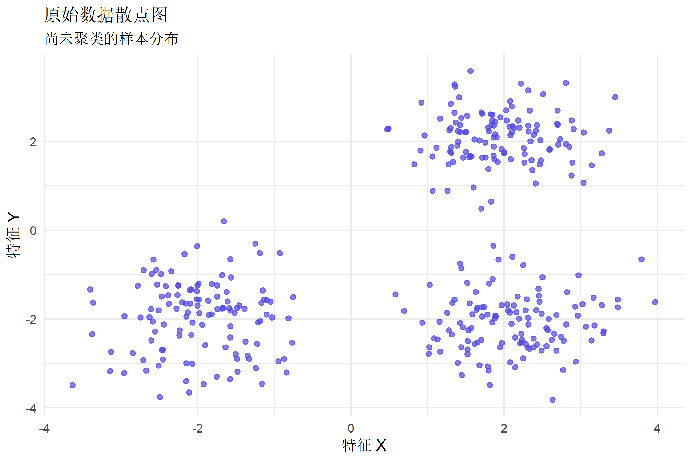
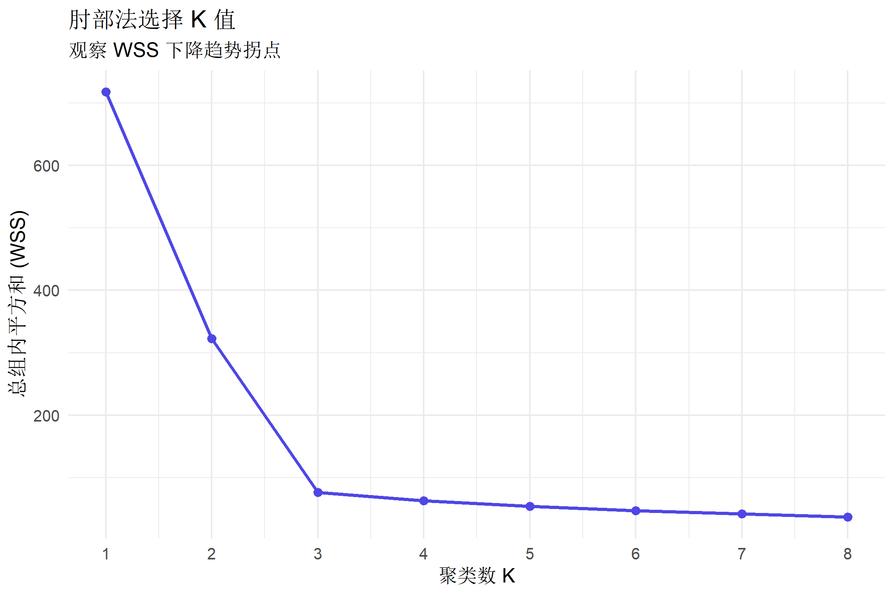
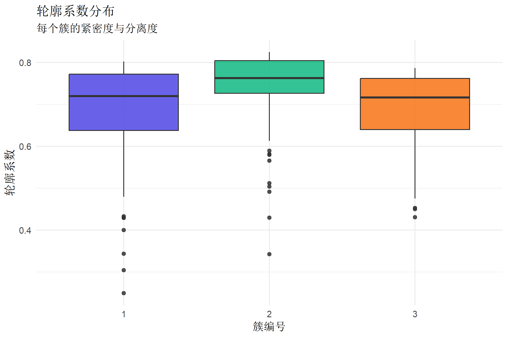
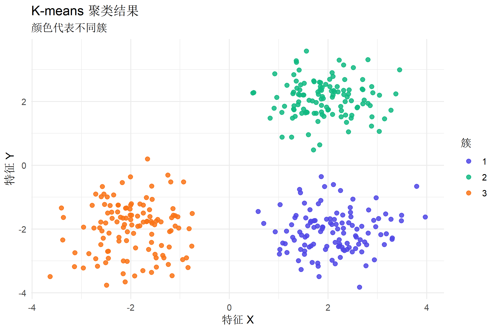
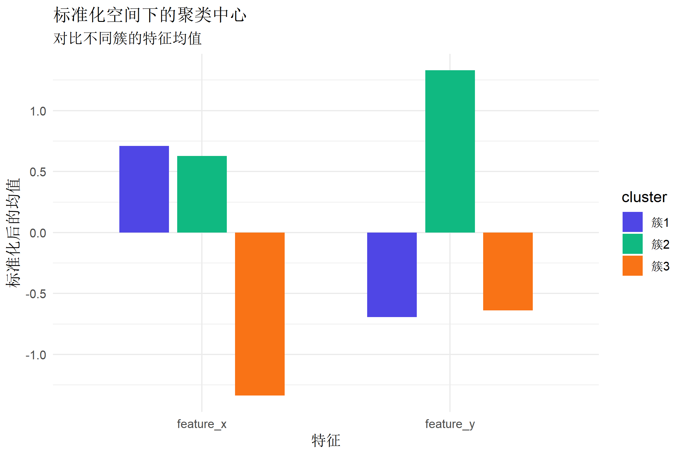
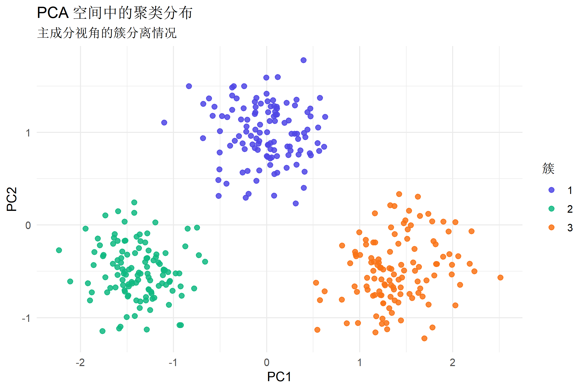
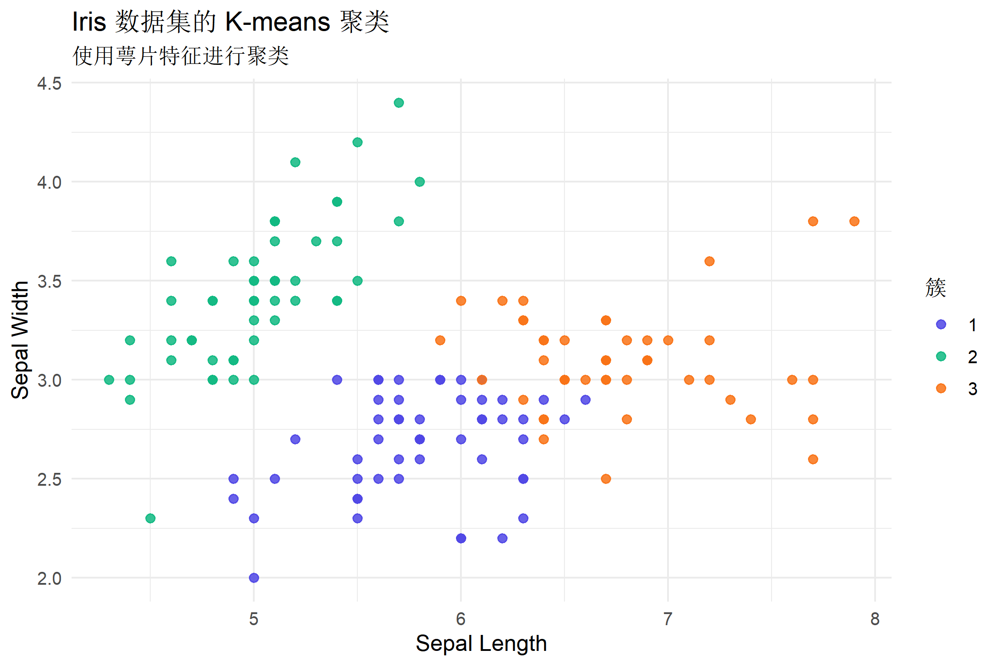

library(ggplot2)
library(dplyr)
library(tidyr)K-means 聚类完整教程
从原理到实践的可复现聚类流程
机器学习与AI
机器学习框架
聚类分析
kmeans
教程目标与适用场景
K-means 是最经典的无监督聚类方法，适合把样本按“相似性”划分为多个组。 本教程将覆盖从数据准备、K 值选择、建模到结果解释的完整流程，并给出 可视化手段帮助理解聚类结构。
适合场景
- 需要对样本进行分组但没有标签的情况
- 中等规模数据的快速聚类探索
- 变量为数值型且可用欧氏距离衡量
不适合场景
- 类别变量或混合类型变量为主的数据
- 类别形状非常非凸或呈长条状的聚类结构
- 类别数量极不均衡或异常值占比很高的数据
K-means 核心原理（直观解释）
K-means 的核心思想是：
- 设定聚类数 K
- 随机初始化 K 个“中心点”
- 将每个样本分配给最近的中心点
- 更新中心点（取均值）
- 重复 3-4 步直到中心稳定
K-means 最小化的是“组内平方和”（Within-Cluster Sum of Squares, WSS）， 因此它对异常值敏感，且要求变量尺度一致。
模拟数据：构造一个可解释的聚类场景
为了清晰展示聚类效果，我们先构造三组二维数据。
set.seed(2026)
cluster_a <- data.frame(
feature_x = rnorm(120, mean = 2, sd = 0.6),
feature_y = rnorm(120, mean = 2, sd = 0.6)
)
cluster_b <- data.frame(
feature_x = rnorm(120, mean = -2, sd = 0.7),
feature_y = rnorm(120, mean = -2, sd = 0.7)
)
cluster_c <- data.frame(
feature_x = rnorm(120, mean = 2, sd = 0.7),
feature_y = rnorm(120, mean = -2, sd = 0.7)
)
sim_data <- bind_rows(cluster_a, cluster_b, cluster_c)ggplot(sim_data, aes(x = feature_x, y = feature_y)) +
geom_point(alpha = 0.7, color = "#4f46e5") +
labs(
title = "原始数据散点图",
subtitle = "尚未聚类的样本分布",
x = "特征 X",
y = "特征 Y"
) +
theme_minimal(base_size = 12)
说明
- 真实数据聚类前应检查是否有明显异常值。
- 若不同变量尺度差异大，必须先进行标准化。
数据标准化（强烈推荐）
scaled_sim_data <- scale(sim_data)标准化能保证每个变量对距离计算贡献相近，避免某一维度“主导”聚类结果。
如何选择 K 值
K-means 需要预先指定 K，常用的选择方式包括：
- 肘部法（Elbow）：观察 WSS 降幅的拐点
- 轮廓系数（Silhouette）：衡量类内紧密与类间分离
肘部法
set.seed(2026)
cluster_range <- 1:8
wss_values <- vapply(cluster_range, function(k_value) {
stats::kmeans(scaled_sim_data, centers = k_value, nstart = 20)$tot.withinss
}, numeric(1))
elbow_df <- data.frame(k = cluster_range, wss = wss_values)
ggplot(elbow_df, aes(x = k, y = wss)) +
geom_line(color = "#4f46e5", linewidth = 1) +
geom_point(size = 2, color = "#4f46e5") +
scale_x_continuous(breaks = cluster_range) +
labs(
title = "肘部法选择 K 值",
subtitle = "观察 WSS 下降趋势拐点",
x = "聚类数 K",
y = "总组内平方和 (WSS)"
) +
theme_minimal(base_size = 12)
解读：当 K 从 2 增加到 3 时 WSS 明显下降，之后下降幅度减弱， 说明 K=3 是一个合理选择。
轮廓系数
set.seed(2026)
km_three <- stats::kmeans(scaled_sim_data, centers = 3, nstart = 20)
silhouette_result <- cluster::silhouette(km_three$cluster, dist(scaled_sim_data))
silhouette_df <- as.data.frame(silhouette_result)
average_silhouette <- mean(silhouette_df$sil_width)
knitr::kable(data.frame(平均轮廓系数 = round(average_silhouette, 3)))| 平均轮廓系数 |
|---|
| 0.708 |
Gap Statistic（进阶）
Gap Statistic 用参考分布评估“随机结构与真实结构”的差异， 能帮助避免仅靠肘部法的主观判断。
set.seed(2026)
gap_result <- cluster::clusGap(
scaled_sim_data,
FUNcluster = stats::kmeans,
K.max = 6,
B = 30
)
gap_table <- as.data.frame(gap_result$Tab)
knitr::kable(round(gap_table, 3))| logW | E.logW | gap | SE.sim |
|---|---|---|---|
| 5.059 | 5.217 | 0.158 | 0.015 |
| 4.574 | 4.833 | 0.260 | 0.017 |
| 3.944 | 4.671 | 0.727 | 0.017 |
| 3.847 | 4.508 | 0.661 | 0.020 |
| 3.819 | 4.371 | 0.552 | 0.020 |
| 3.747 | 4.262 | 0.516 | 0.031 |
轮廓系数接近 1 表示聚类效果较好，接近 0 表示类间重叠。
ggplot(silhouette_df, aes(x = factor(cluster), y = sil_width, fill = factor(cluster))) +
geom_boxplot(alpha = 0.85) +
scale_fill_manual(values = c("#4f46e5", "#10b981", "#f97316")) +
labs(
title = "轮廓系数分布",
subtitle = "每个簇的紧密度与分离度",
x = "簇编号",
y = "轮廓系数"
) +
theme_minimal(base_size = 12) +
theme(legend.position = "none")
训练 K-means 模型
set.seed(2026)
km_model <- stats::kmeans(
scaled_sim_data,
centers = 3,
nstart = 25,
iter.max = 100
)
km_model$size[1] 120 120 120解释
centers = 3表示聚类数为 3。nstart = 25会尝试 25 次随机初始化，提升稳定性。iter.max限制最大迭代次数，避免极端情况。size表示每个簇的样本数量。
聚类质量指标（可选）
between_ratio <- km_model$betweenss / km_model$totss
quality_df <- data.frame(
组间平方和占比 = round(between_ratio, 3),
总组内平方和 = round(km_model$tot.withinss, 2)
)
knitr::kable(quality_df)| 组间平方和占比 | 总组内平方和 |
|---|---|
| 0.894 | 76.35 |
组间平方和占比越高，说明簇间分离度越好。
聚类结果可视化
原始空间可视化
clustered_data <- sim_data |>
mutate(cluster = factor(km_model$cluster))
ggplot(clustered_data, aes(x = feature_x, y = feature_y, color = cluster)) +
geom_point(size = 2, alpha = 0.85) +
scale_color_manual(values = c("#4f46e5", "#10b981", "#f97316")) +
labs(
title = "K-means 聚类结果",
subtitle = "颜色代表不同簇",
x = "特征 X",
y = "特征 Y",
color = "簇"
) +
theme_minimal(base_size = 12)
聚类中心可视化
centers_df <- as.data.frame(km_model$centers)
centers_df$cluster <- paste0("簇", seq_len(nrow(centers_df)))
centers_long <- pivot_longer(
centers_df,
cols = c(feature_x, feature_y),
names_to = "feature",
values_to = "value"
)
ggplot(centers_long, aes(x = feature, y = value, fill = cluster)) +
geom_col(position = position_dodge(width = 0.7), width = 0.6) +
scale_fill_manual(values = c("#4f46e5", "#10b981", "#f97316")) +
labs(
title = "标准化空间下的聚类中心",
subtitle = "对比不同簇的特征均值",
x = "特征",
y = "标准化后的均值"
) +
theme_minimal(base_size = 12)
降维后可视化（PCA）
pca_result <- prcomp(scaled_sim_data)
pca_df <- data.frame(pca_result$x[, 1:2], cluster = factor(km_model$cluster))
colnames(pca_df) <- c("PC1", "PC2", "cluster")
ggplot(pca_df, aes(x = PC1, y = PC2, color = cluster)) +
geom_point(size = 2, alpha = 0.85) +
scale_color_manual(values = c("#4f46e5", "#10b981", "#f97316")) +
labs(
title = "PCA 空间中的聚类分布",
subtitle = "主成分视角的簇分离情况",
color = "簇"
) +
theme_minimal(base_size = 12)
真实数据示例：Iris 数据集
使用经典 Iris 数据集演示真实应用中的聚类评估与解释。
iris_data <- iris |>
select(Sepal.Length, Sepal.Width, Petal.Length, Petal.Width)
scaled_iris <- scale(iris_data)选择 K 值并训练模型
set.seed(2026)
iris_km <- stats::kmeans(scaled_iris, centers = 3, nstart = 30)聚类结果与真实标签对照
iris_clustered <- iris |>
mutate(cluster = factor(iris_km$cluster))
cluster_table <- table(真实物种 = iris_clustered$Species, 聚类结果 = iris_clustered$cluster)
knitr::kable(cluster_table)| 1 | 2 | 3 | |
|---|---|---|---|
| setosa | 0 | 50 | 0 |
| versicolor | 39 | 0 | 11 |
| virginica | 14 | 0 | 36 |
解释
- K-means 是无监督算法，但可以通过与真实标签对照评估聚类一致性。
- 如果某一簇几乎对应单一物种，说明聚类效果较好。
可视化聚类分布
iris_plot_data <- iris_clustered |>
select(Sepal.Length, Sepal.Width, cluster)
ggplot(iris_plot_data, aes(x = Sepal.Length, y = Sepal.Width, color = cluster)) +
geom_point(size = 2, alpha = 0.85) +
scale_color_manual(values = c("#4f46e5", "#10b981", "#f97316")) +
labs(
title = "Iris 数据集的 K-means 聚类",
subtitle = "使用萼片特征进行聚类",
x = "Sepal Length",
y = "Sepal Width",
color = "簇"
) +
theme_minimal(base_size = 12)
结果解读与报告建议
建议在报告中包含以下内容：
- K 值选择依据（肘部法、轮廓系数、业务解释）
- 各簇规模与主要特征（均值、标准差、中心差异）
- 可视化展示（原始空间 + PCA 空间）
- 业务解释（每个簇的含义与行动建议）
聚类中心的含义
centers_table <- as.data.frame(km_model$centers)
centers_table$cluster <- paste0("簇", seq_len(nrow(centers_table)))
knitr::kable(centers_table)| feature_x | feature_y | cluster |
|---|---|---|
| 0.709871 | -0.6927186 | 簇1 |
| 0.627363 | 1.3316562 | 簇2 |
| -1.337234 | -0.6389376 | 簇3 |
聚类中心代表每个簇的“平均样本特征”，用于描述典型画像。
常见错误与排查
- 未标准化数据：导致尺度大的变量主导结果。
- K 值随意选择：应结合肘部法与业务理解。
- 异常值未处理：少量异常点会影响聚类中心。
- 类别形状不适配：K-means 只适合“近似球形”的簇。
- 初始化次数太少：容易陷入局部最优，应提高
nstart。
进阶扩展方向
- K-means++ 初始化：减少随机初始带来的不稳定。
- 替代算法：DBSCAN、层次聚类、谱聚类。
- 高维优化：先 PCA 降维再聚类。
- 评估方法：Gap Statistic、Calinski-Harabasz 指数。
- 稳定性分析：重复抽样聚类，检查簇一致性。
在正式报告中，可附上 K 值选择依据、轮廓系数/Gap 指标，以及 聚类中心的业务解释，避免只给出“聚类编号”而缺乏可解释性。
总结
K-means 是最容易上手的聚类算法，但要注意数据标准化、K 值选择与结果解释。 通过肘部法与轮廓系数结合可视化，你可以构建一个完整、可复现的聚类分析流程。